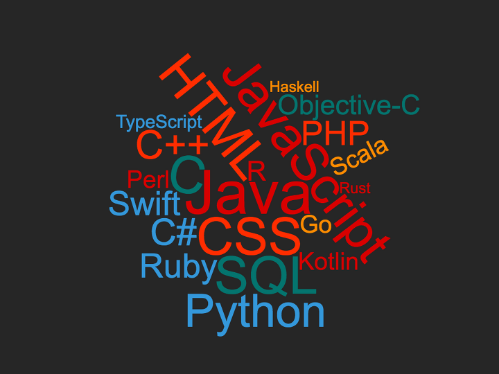
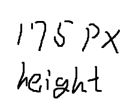

프로그래밍 언어는 컴퓨터 시스템을 구동시키는 소프트웨어를 작성하기 위한 형식 언어이다.
고급 언어일수록 사람이 사용하는 언어에 가깝다.
고급 언어일수록 사람이 사용하는 언어에 가깝다.
일반적으로, 프로그래밍 언어를 지원하는 소프트웨어, 즉 소프트웨어를 작성하기 위한 소프트웨어를 가리키는 때가 많고,
이때에는 프로그래밍 언어와 소프트웨어를 구분하지 않고 소프트웨어 자체를 프로그래밍 언어로 보기도 한다.

프로그래밍 언어의 역사
최초의 컴퓨터는 종종 프로그래밍 언어의 도움 없이 프로그래밍되었는데, 이는 프로그램들을 절대적인 기계어로 작성함으로써 이루어졌다.
10진이나 2진 형태의 프로그램들은 천공 카드나 자기 테이프로부터 읽거나 컴퓨터 프론트 패널의 스위치를 켜고 끔으로써 불러들였다.
절대적인 기계어는 나중에 1세대 프로그래밍 언어로 명칭이 정해졌다.
다음 단계로 이른바 2세대 프로그래밍 언어, 곧 어셈블리어가 개발되었으며, 여전히 특정 컴퓨터의
명령어 집합 구조와 밀접하게 관계되었다. 프로그램을 월씬 더 인간이 읽기 쉽게 만들어주었을 뿐 아니라, 주소 계산 시 따분하고 오류가 발생할
경향이 있는 프로그래머를 안심시켜 주었다.
최초의 고급 프로그래밍 언어, 즉 3세대 프로그래밍 언어는
1950년대에 작성되었다. 컴퓨터용으로 설계될 초기의 고급 프로그래밍 언어는 Plankalkül였으며, 콘라트 추제가 1943년부터 1945년까지
독일의 Z3용으로 개발될 것이었으나 1998년, 2000년까지 구현되지 않았다.
4세대 프로그래밍 언어는 3세대 프로그래밍 언어보다 내부 컴퓨터 하드웨어의 상세한 부분을 더 고급적으로 추상화시키는 것을 목적으로 한다.
5세대 프로그래밍 언어는 프로그래머가 작성한 알고리즘을 이용하지 않고, 프로그램에 주어지는 제약을 사용하여 문제를 해결하는 언어이다.